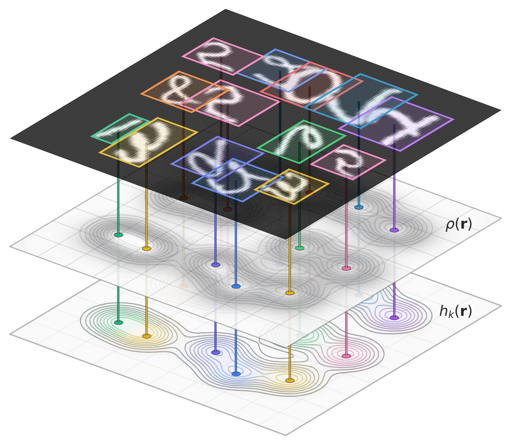
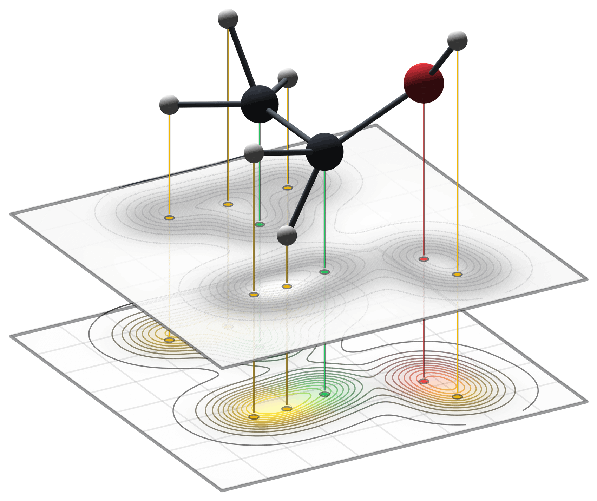
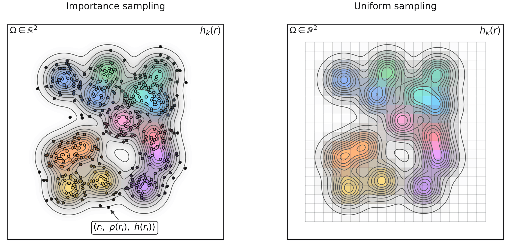
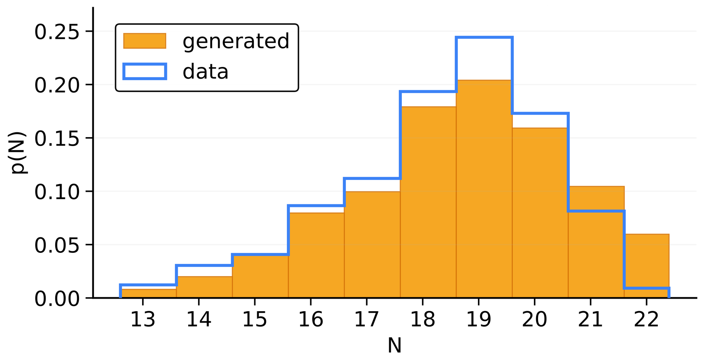
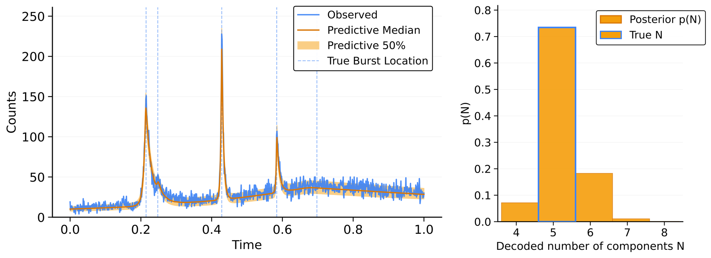

Why convert objects to continuous fields
Many prediction problems have sets as outputs, and the size of the set changes from one example to the next. An image contains a different number of objects each time, a molecule has a different number of atoms, and a radio-telescope light curve can be explained by a different number of bursts.
In regression, the number of objects is itself something to predict. A model that counts the digits in an image or the bursts in a light curve outputs an integer that changes with the input, together with every object's position and attributes. Common solutions are a fixed number of output slots, as in DETR [1], which caps the number of objects the model can return, or a dedicated head that predicts the count.
In generation, a model typically has to decide the number of objects first. For a molecule, the number of atoms is sampled before the geometry, often from a separate distribution or count model, as in EDM [2], and positions and atom types are then generated for that many atoms. The alternative is to pad every example to a maximum size and let the model switch the extra entries off. Both become awkward when the count should depend on a continuous condition such as a molecular property: binning the property together with the number of atoms leaves no way to sample a count for a bin the training data never contained.
CORDS (Continuous Representations of Discrete Structures) removes the separate count. A set of objects with positions and attributes becomes two continuous fields, a density that encodes where the objects are and a feature field that carries their attributes. Every object adds one unit of mass to the density, so the number of objects is the total mass, \(N = \int \rho(\mathbf r)\,d\mathbf r\). A model that predicts the fields predicts the count together with positions and attributes, and the count is a continuous, differentiable function of the density. There is no count model, padding or fixed slots, and the fields can be turned back into a set.
Voxel and neural-field representations of molecules and proteins [3, 4, 5] also avoid fixing the size, but they recover the atoms afterwards by peak finding or a learned decoder; the count and the attributes are not read from the representation itself.

Density and feature fields
Encoding
Take a set of \(N\) objects, where object \(i\) has a position \(\mathbf r_i \in \mathbb R^d\) and an attribute vector \(\mathbf x_i \in \mathbb R^c\). The space can be the image plane, three-dimensional space or a time axis. For an atom, \(\mathbf x_i\) can be a one-hot encoding of its element. For a digit in an image, it holds the class and the width and height of its box.
We place a Gaussian with unit integral and width \(\sigma\), \(\kappa_\sigma(\mathbf r) = (2\pi\sigma^2)^{-d/2} \exp(-\lVert\mathbf r\rVert^2 / 2\sigma^2)\), at each position and build two fields:
The density \(\rho\) has one bump per object. Each of the \(c\) channels of \(\mathbf h\) is the same sum with every bump scaled by the object's value of that attribute. The sums do not depend on the order of the objects, so the encoding is permutation invariant. Every bump has integral one, so
The count is the total mass of the density.

Decoding
We recover the set in three steps. Count: the total mass of the density gives the number of objects \(\hat N\).
Positions. Find the \(\hat N\) centers whose kernels add up to the density,
For a field from the encoder, the original positions minimize this. For molecules we start from a Gaussian mixture fit to the samples and refine the centers with L-BFGS; for images we start from the peaks of the density.
Attributes. With the centers fixed, \(\mathbf h\) is a sum of the same kernels, each weighted by its object's attributes, so the attributes are the solution of one small linear system whose matrix holds the overlaps between kernels. Solving it separates neighboring kernels again; for categorical attributes we take the largest channel.
For fields produced by the encoder and evaluated exactly, the three steps return the original set up to order, provided the kernels at distinct centers are linearly independent and a sum of equal-weight kernels determines its centers. In practice the fields are known at finitely many points, nearby kernels overlap, and a model's prediction is only approximately the encoding of a set; each of these limits the accuracy of the decoded set.
Sampling the fields
A network cannot take a continuous function as input, so we evaluate the fields at \(M\) locations \(\mathbf r_s\) and give the network the tuples \((\mathbf r_s, \rho(\mathbf r_s), \mathbf h(\mathbf r_s))\). There are two ways to choose the locations.
Uniform sampling evaluates the fields on a regular grid. It suits images and time series, which already lie on grids. For molecules a grid is inefficient: the molecule fills a small part of space, the number of grid points grows cubically with the resolution, and a fixed box imposes boundaries. For molecules we use importance sampling instead. We draw locations with probability proportional to the density and evaluate the fields there. The samples concentrate where the atoms are, no bounding box is needed, and the model can learn the coordinates and the field values jointly for molecules of any size.

The sampling scheme decides the network. Importance samples form a large unordered point set, and we process it with Erwin [6], a hierarchical transformer that scales to thousands of points. Images and time series use ordinary 2D and 1D convolutional networks (CNNs).
On samples, the decoder replaces its integrals by weighted sums. A density predicted by a model rarely sums to an exact integer, so the count estimate is rounded. For generated molecules the sampling distribution is not known, so we train with the density rescaled so that its mean over the samples equals the number of atoms, and at generation time the rounded mean of the generated density is the count.
Molecules, detection and inference
Molecules
We use QM9, small organic molecules [7], and GEOM-Drugs, larger drug-like molecules [8]. Each atom carries its element and, on GEOM-Drugs, its charge. At every training step we encode the molecule, draw \(M\) importance samples and give them to Erwin. For generation, a diffusion model denoises the sample locations and the field values together, so the number of atoms, their positions and their elements all come out of the generated fields; we decode to atoms only for the metrics that need a molecular graph.
On QM9, the molecule stability is 82.3% under the standard RDKit evaluation, against 82.0% for EDM [2] and 89.4% for GeoLDM [9]; under the protocol of VoxMol and FuncMol, which also use continuous representations, it is 93.8%, about 4.5 points above both [3, 4]. On GEOM-Drugs the atom stability is behind EDM and GeoLDM. Without an equivariant backbone, the model is competitive with equivariant graph networks, though the strongest of them are ahead.
Because the count comes out of the fields, conditional generation needs no separate count model. We condition on a continuous property, the polarizability, without binning it or the number of atoms. To test generalization, we remove a range of polarizability from training and condition on it at inference.

The same sampled fields also serve property regression, where the network pools its output and nothing is decoded.
Object detection on MultiMNIST
The objects are the bounding boxes of digits, each with a center, a class and a size. We encode a scene into a density on the image plane, one feature channel per class and two channels for the width and height; the first figure shows the density and the class channels. A small CNN predicts these fields from the image, and the decoder turns them into boxes. Scenes are generated on the fly with up to 15 digits.
We compare with a DETR-style detector with 15 queries and an anchor-free YOLO-style detector [10], all with about 8 million parameters, on a split with exactly 16 digits per image, one more than the training maximum. Between the two splits the average precision (AP) of CORDS falls by 16.4% in relative terms (from 76.8 to 64.2), against 19.5% for DETR and 24.5% for YOLO; DETR stays ahead in absolute AP (65.4 against 64.2 on 16 digits). The comparison measures how AP degrades in a denser scene.
Simulation-based inference for fast radio bursts
Fast radio bursts are millisecond-scale flashes of extragalactic radio emission [11, 12]. In our simulator a light curve of photon counts with Poisson noise is a sum of one to six transient components, each with an onset time, an amplitude, a rise time and a skewness, and the task is to infer the posterior over these parameters, including their number, from the observed curve. We put a density \(\rho(t)\) on the time axis with a bump at each onset time and a feature field that carries the other three parameters, append the observed light curve on a grid of 1,000 time points, and train a flow-matching model [13] to sample fields given the curve. Each sampled field decodes to a count and a set of components, so many samples give the posterior over the count with no separate count model.

Summary and limitations
CORDS maps a set of spatial objects with attributes to a density field and feature fields, and back. The count is the total mass of the density, so a model that works in field space handles sets of different sizes with the same network, without a separate count model, padding or fixed slots. The same encoding and the same three decoding steps serve molecules, images and time series, with different networks and training objectives in each.
The method has costs. High-fidelity reconstruction of molecules benefits from dense sampling, on the order of \(10^3\) points each, which makes larger molecules expensive. Decoding adds cost: on QM9, fitting the positions takes 20.0 ms per molecule on an H100 in a prototype implementation, against 58.8 ms for sampling with 30 steps. In detection, overlapping kernels make nearby objects hard to separate and the kernel width needs tuning. The exact inverse holds for fields produced by the encoder, and fields predicted by a model are decoded approximately. Detection is tested only on MultiMNIST, and larger benchmarks such as COCO remain open.
The code is a beta release with the transform, the reconstruction tools and notebooks for molecules and MNIST detection; its training configurations are small demonstrations.
Selected references
- Carion et al. (2020). End-to-End Object Detection with Transformers. ECCV.
- Hoogeboom et al. (2022). Equivariant Diffusion for Molecule Generation in 3D. ICML.
- Pinheiro et al. (2023). 3D molecule generation by denoising voxel grids. NeurIPS.
- Kirchmeyer et al. (2024). Score-based 3D molecule generation with neural fields. NeurIPS.
- Faltings et al. (2025). ProxelGen: Generating Proteins as 3D Densities. arXiv preprint.
- Zhdanov et al. (2025). Erwin: A Tree-based Hierarchical Transformer for Large-scale Physical Systems. ICML.
- Ramakrishnan et al. (2014). Quantum chemistry structures and properties of 134 kilo molecules. Scientific Data.
- Axelrod and Gómez-Bombarelli (2022). GEOM, energy-annotated molecular conformations for property prediction and molecular generation. Scientific Data.
- Xu et al. (2023). Geometric Latent Diffusion Models for 3D Molecule Generation. ICML.
- Wang et al. (2024). YOLOv10: Real-Time End-to-End Object Detection. NeurIPS.
- Petroff et al. (2022). Fast radio bursts at the dawn of the 2020s. The Astronomy and Astrophysics Review.
- Zhang (2023). The physics of fast radio bursts. Reviews of Modern Physics.
- Dax et al. (2023). Flow Matching for Scalable Simulation-Based Inference. NeurIPS.